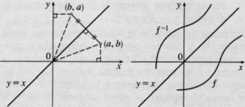
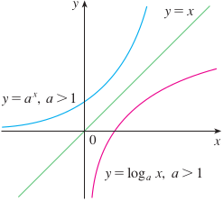

Functions
Definition 1.4.0. A mapping (or a function) f from a set A to a set B is a rule that for each element of A associates a uniquely determined element of B. The set A is called domain of the function f, the set B is the codomain of the function. This is usually written:
f: A → B
if a ∈ A then the unique element b∈ B, which corresponds to a is denoted by f(a). We say that b = f(a) is an image of a through f, and a is a preimage or inverse image of b through f.
The function is thus specified by three objects: the rule that establishes the correpondence, its domain, and its codomain. Changing any one of them will change the function, and it will determine wheter a correspondence is a function.
Example 1.4.1. Let X = {1,2,3,4} and Y = {D,B,C,E}. The law f: X → Y defined as f(1)=D, f(2) = B, f(3) = C, f(4) = C is a function. We can represent it with the following diagram

Let f: A →B; The set of all images of all elements a ∈ A is a subset of B called range or image of f which we denote by Im(f) or f(A).
Range f = Im f = f(A) := {b ∈ B | b = f(a) for some a ∈ A} ⊆ B
One can observe that in Example 1.4.1, there are elements in the domain that are associated with the same element of the codomain, e.g. f(3) = C, f(4) = C. This does not contradict the definition of function, because the definition does not state that the different elements of A can't be mapped to a same element of B. This is an additional property that defines injective functions.
Definition 1.4.2 A function f: X → Y is injective (or one-to-one) if, for all x1 and x2 in X, f(x1) = f(x2) implies x1 = x2. We say in this case that f is a one-to-one mapping for X to Y.

Not all the elements of B have to correspond to elements of A, but when it happens then the codomain of a function is also its range, i.e. when Im(f) = B, and the function is said to be onto or surjective.
Definition 1.4.3 A function f: X → Y is surjective (or onto) if, for all y ∈ Y, there exists an x ∈ X such that f(x) = y. Simbolically ∀y ∈ Y, ∃ x ∈ X, f(x) = y. In this case we say that f maps X onto Y and we write Im f = Y.

The function f: ℝ → ℝ defined by f(x) = x2 is not surjective, since the squares of real numbers are all positives. However, the function g: ℝ → ℝ≥0 defined by g(x) = x2 (with the restricted codomain) is surjective, since for every y in the nonnegative real codomain, there is at least one x in the real domain, such that x2 = y.
Definition 1.4.3. Let S and T two subsets of A and B respectively. The inverse image or preimage of a set T ⊆ B under f, is the subset of A defined by
f−1(T) = {a ∈ A| f(a) ∈ T}
other notation include f−1[T].
The inverse image of the dicrect image, for any S ⊂ A,
f−1(f(S)) ⊇ S, equality holds if f is injective. 1.4.1
The direct image of an inverse image, for any T ⊂ B, is
f(f−1((T)) ⊇ T, equality holds if f is surjective. 1.4.2
If f: X → Y is both injective and surhective, then f is said to be injective. If f is bijective, then y = f(x) has a unique solution x ∈ X for each y ∈ Y, and the unique x is denoted by x = f−1 (y). If f is bijective, then Eqns. 1.4.1 and 1.4.2 we have
f−1(f(S)) = S, for any S ⊂ X
f(f−1((T)) = T, for any T ⊂ Y.
Definition 1.4.8. A function f: X → Y is biunique when each y ∈ Y has one counterimage in X. In this case f is both injective and surjective.

Definition 1.4.9. If f: A → B a bijective function, then is also invertible. That is there exists the function f−1: B → A such that every y ∈ B is mapped to a unique element x ∈ A; we have that:
f −1 (f(x)) = x, ∀x ∈ A; f(f −1 (y)) = y, ∀y ∈ Y;
Assigning the unique inverse image x to each y ∈ Y defines a map f−1 of Y into X, which is called the inverse of f. By definition f(f−1)(b)(b) = b for every b ∈ B and f−1(f(a)) = a for every a ∈ X. For a function to have an inverse, it must be bijective. The inverse function f−1 is unique if exists. For example the function f(x) = x3 of ℝ into ℝ is bijective and f−1(x) = x1/3.
Note. Don't confuse f−1(T) with the inverse function f−1. The inverse function cannot be defined for any function, whereas the pre-image can always be defined.
Example 1.4.2. Let f: X → Y defined as in the example above, and let X1 = {2,4} and B1 = {B,C,E} then f(X1) = {B,C} and f−1(B1) = {2,3,4}.
Example 1.4.3. Consider the function f: ℝ → ℝ defined as f(x) = x2. Note that f({0,1,2}) = {0,1,4} and f−1({0,1,4}) = {−2,−1,0,1,2}. This shows that f−1(f(X)) ≠ X in general, it is only when injective.
Proposition 1.4.4. Consider f: A → B, then
f is injective if and only if X = f−1(f(X)) for all X ⊆ A.
f is surjective if and only if f(f−1(Y)) = Y for all Y ⊆ B.
Graph of a function
A function ca be thought of as a correspondence between sets A and B and in particular as a set of ordered pairs (a,b) where the first element a of the pair belongs to the domain A and the second element b to the codomain B. Thus each correspondence is a subset of the cartesian product A x B.
Definition 1.4.5. The subset F of A x B (i.e. the relation F from A to B) given by
F = {(a, f(a)) | a ∈ A}
is known as the graph of the function.
Note that not every correspondendence can serve as the graph of a function, only a set of ordered pairs in which each element of the domain has only one element associated with it in the range is the graph of a function.
Note also that a function is a (particular) relation, while not every relation is a function. If A = B we will say there is a binary relation between the elements of A.
Graph of f−1
We want to represent the grap of f andf−1 on the same cartesian plane. Since f(a) = b iff f−1(b) = a, the point (a,b) belongs to the graph of f iff (b,a) belongs to the graph of f−1. The point (b,a) is obtained from (a,b) by reflection about the line y = x
Some examples of function and inverse functions are the following
The exponential function x ↦ ax with its inverse, the logarithmic function x ↦ lna x.
The trigonometric functions x ↦ sin x, x ↦ cos x and x ↦ tan x, with the inverses x ↦ arcsin x, x ↦ arccos x and x ↦ arctan x.
The power function x ↦ xn, for n ≥ 1, integer, with its inverse function: x ↦ x1/n.
1.4.10 Examples.
The function f: ℝ → ℝ, defined as f(x) = x2 is not injective (for example f(1) = f(−1) = 1) and not even surjective. The function f:[0,+inf) → ℝ with f(x) = x2 is injective. Also the function h ℕ → ℕ, defined as h(x) = x2 for each x ∈ ℕ is not surjective since there is no natural number x such that x2 = 2.
The function f: ℝ → ℝ, defined as f(x) = x3, is both injective and surjective since from x1 ≠ x2 follows x13 ≠ x23
The function f: ℝ → ℝ, defined as f(x) = ex, is injective but not surjective since no positive elements is mapped to negative values.
The function f: ℝ → ℝ, defined as f(x) = x3 − x, is surjective but not injective.
The function f: (0, +∞) → ℝ defined as f(x) = ln x, is surjective and injective.
1.4.11 Definition. Let f: A → B a function from A to B. If A1 is a subset of A, the function f implies a law such that for each element of A1 associate an element of B, hence a function from A1 to B. This function is known as restriction of f to A1 and indicated by f|A1. Its image is often time indicated by f(A1) rather than f|A1 (A1) to indicate the image restricted to A1 just to simplify the notation.
1.4.12 Theorem. Let f: A → B a function between finite sets
If f is injective, then |A| ≤ |T|;
If f is surjective, then |A| ≥ |T|;
If |A| = |T|, then f is bijective, iff , f is both injective and surjective.
Well-defined functions
The condition that a function must be well defined means that f has a definition that assigns it a unique value
a = b ⇒ f(a) = f(b)
Example 1.4.13 Let ℚ be the set of rational number. Let
f(x/y) = x + y
for any x/y in ℚ. Does this yield to a well-defined function f: ℚ → ℝ.
Solution. The answer in in the negative. For example not that 2/3 = 4/6, but
f(2/3) = 2 + 3 = 5 ≠ f(4/6) = 4 + 6 = 10
Example 1.4.14 Show that the function f: ℚ → ℚ defined by
f(x / y) = (x + y) / y
is well defined.
Solution. Let a/b = c/d ∈ ℚ. Then
f(a / b) = (a + b)/b
=a / b + b /a
=c / d + c /d
=(c + d)/d
=f(c/d)
so f is well defined.